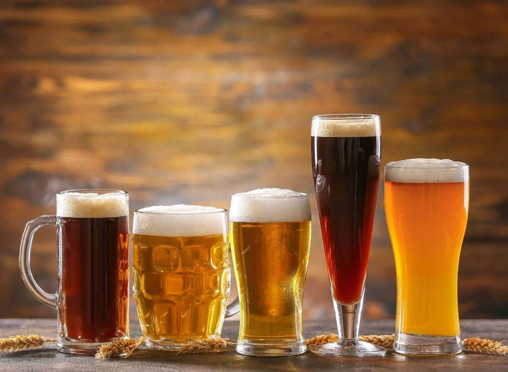

The limitless world of beer means a dizzying number of drink options are available at any given bar. From classic lagers to bold IPAs to funky
sour ales, each type of beer spawns more sub-categories than drinkers know what to do with. Draft beer menus at local watering holes have gone
from offering a few standard brands to listing beverages that seem to come out of nowhere — and each beer tastes more complex than the last.
Knowing what certain styles of beer taste and look like can make narrowing down a favorite a lot easier.
The major difference between types of beer comes down to the type of yeast used to ferment it. A beer can qualify as either a lager or an ale,
depending on the fermenting process. Ales are created through top fermentation, a process in which yeast ferments at warmer temperatures and
settles at the top of the beer. Yeast used to make lager tends to settle at the bottom of the beer, and the fermenting process is longer and
takes place under cooler temperatures. The yeast in ales has a higher tolerance for alcohol than the yeast used in lagers.
Beers start out as an ale or a lager, and their specific styles and flavors continue to evolve from there. Under the broad ale category,
there are numerous types of beer, including pale ales, India pale ales (IPA), porters, stouts, and wheat and Belgian styles.
Lagers encompass a range of styles, including the pale Pilsners and German Helles and the darker American lagers. Here’s how to break down
beer styles so you sound like a pro at the bar.

What is lager?
Lagers are a typical entry point into beer for new drinkers. Made with bottom fermenting yeast that has a lower tolerance to alcohol,
lagers can taste light and a little malty. Classic lagers in America include Miller High Life, Coors, Budweiser and Yuengling.
And according to Jim Koch, the co-founder of Boston Beer Co., which makes Sam Adams beer, lagers are a great launching pad for newcomers to beer.
“They are clean, consistent, well made, and not particularly challenging on the flavor,”
he said. “It’s not a bad place to start as you work your way up the flavor ladder.”
What is an IPA?
India Pale Ales (IPAs), which encompass numerous styles of beer, get their characteristics largely from hops and herbal, citrus or fruity flavors.
They can be bitter and contain high alcohol levels, though the final product depends on the variety of hops used. Some IPAs can taste like pure
citrus, while others are strong and bitter. Prominent IPA styles include West Coast IPA, British IPA and New England Style IPA.
According to Bon Appétit, New England IPAs carry a fruity flavor with low bitterness, while the British style is maltier and bitter.
West Coast IPAs appear to stand somewhere in the middle, with a balance between the fruitiness and bitterness. The best way to figure out
your preference would be to figure out which IPA style goes best with your tastebuds.
According to Koch, IPAs are usually a beer drinker’s first introduction to the world of craft beer. He suggests trying out a variety of
IPA types before eventually settling on a couple of favorites.
What is pale ale?
Pale ales are usually hoppy but carry a lower alcohol content than IPAs. Most types of pale ale, which can include American amber ale,
American pale ale, blonde ale and English pale ale, are malty, medium-bodied and easy to drink.
What is a pilsner?
Pilsners, which originate from the Czech Republic, fall under the lager category. German pilsners give off a pale gold color and crisp flavor,
while Czech pilsners are a little darker with higher bitterness.
What is a stout beer?
A dark beer, the flavor of stouts depend on where they come from. Sweet stouts largely originate from Ireland and England and are known for
their low bitterness. In fact, Ireland’s Guinness brand produces some of the world’s most recognizable stout beer.
According to the Beer Judge Certification Program (BJCP), which ranks and evaluates all styles of beer, stouts are a “sweet, full-bodied,
slightly roasty ale that can suggest coffee-and-cream, or sweetened espresso.” While the darker color of the beer gives the impression
it’s tough to drink, these stouts carry sweetness from unfermented sugars that offset any bitterness.
Stouts produced in the U.S. combine the typical dark body and creamy notes with the hoppy bitter flavors characterized by American beers.
American stouts are strong, highly roasted, bitter and hoppy, with high malt flavors that give them the taste of coffee or dark chocolate,
according to the BJCP.
What is a porter?
Traditional porters, which can trace their roots to the United Kingdom, are dark in color like stouts due to common ingredients
like chocolate or other dark-roasted malts. Porters tend to taste less like coffee than stouts, with more of a chocolatey feel.
What is Belgian beer?
Belgium’s rich beer culture has poured into the U.S. over the years, giving enthusiasts on this side of the Atlantic a deep appreciation
for the wide variety of Belgian-style flavors. Belgian beers span pale ales, dark ales, fruity beers and sour ales. WebstaruantStore,
which provides equipment and information for restaurants, bars and other establishments, generally defines Belgian-style beers as carrying fruity,
spicy and sweet flavors with a high alcohol content and low bitterness.
Popular Belgian beers also include Trappist ales, which are produced only at Trappist monasteries that brew their own beer. Trappist ales
encompass beers like Belgian Dubbel, which is somewhat strong and complex, and Belgian Tripel, which is pale, spicy and dry. Blond ales like
Delirium Tremens further add to the strong flavor profile of Belgian beers.
What is wheat beer?
Wheat beers rely on wheat for the malt ingredient, which gives the beverage a light color and alcohol level that makes it perfect for kicking
back with during the summer and for combining it with fruit, like a slice of lemon or orange. Some wheat beers, with their funky and tangy flavors,
fall under Belgian-style brews while the ones made in the U.S. have a light flavor that recalls bread.
What is sour beer?
Sour beer has shot up in popularity in the U.S. over the last few years, becoming an enticing beverage to people looking to branch out their
beer palates or to those wanting to try something new. Highly tart, sour beers can take on many forms, including Belgian-style Lambic beer,
fruity Flanders ale and lemony Berliner Weisse beer. With the addition of fruits like cherry, raspberry or peach, sour beers marry sweet and
sour to make beer flavors completely unlike the lagers and IPAs of yore.